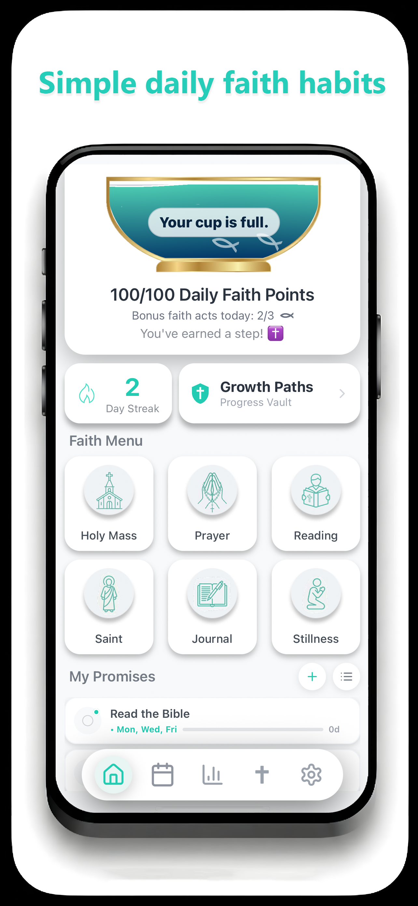
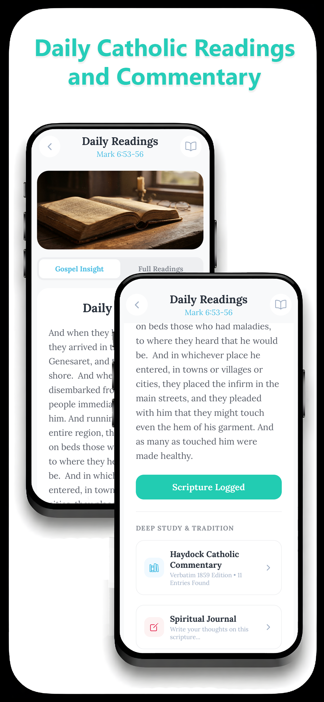
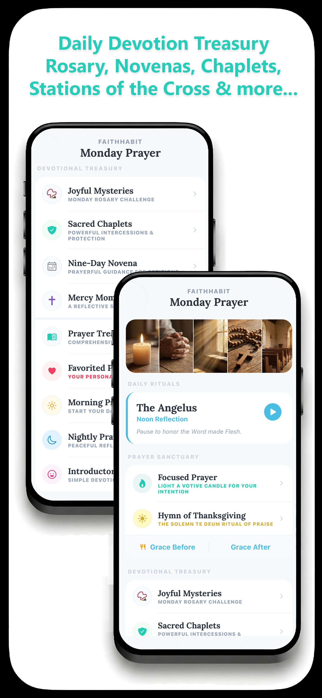
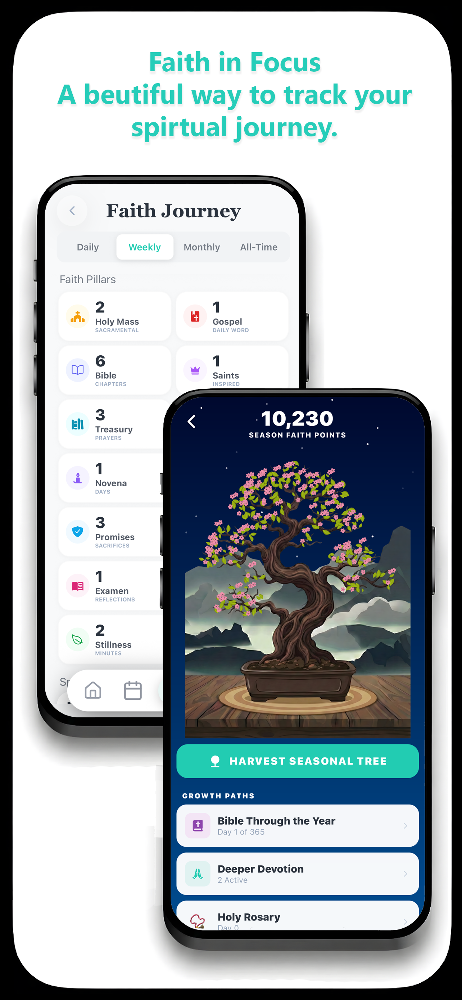
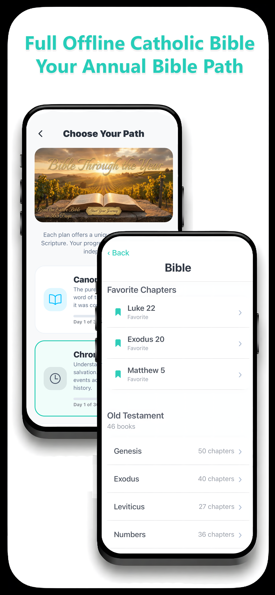

A private Catholic habit builder for daily prayer, Scripture, devotions, liturgy, saints, and visible spiritual progress — fully offline and designed to help you return each day with consistency.




FaithHabit is designed to be a digital sanctuary — a quiet space to cultivate your spiritual life at a pace that feels natural to you. Whether you are taking your first steps, exploring the depths of the faith, or are a dedicated student of the Word, this space is yours.
But FaithHabit is more than a library. It is a private Catholic habit builder designed to help you return each day with consistency. Prayer, Scripture, Mass, service, devotions, and spiritual study can all become part of a steady rhythm you can actually see.
You won't find penalties or pressure here. Because FaithHabit is 100% offline, there are no leaderboards or social pressures. Your progress is personal, private, and focused entirely on your own growth. The only rule: show up. Just one small act keeps your daily streak alive.
Track prayer, Scripture, devotions, Mass, service, and spiritual routines through visual progress systems built for consistency. FaithHabit helps turn daily intention into a rhythm you can actually see — fully private and fully offline.
Visual map of your progress through all 73 books of the Catholic Canon. Every chapter you read lights up green, creating a living testament to your journey through Scripture.
Stay synchronized with the universal Church. Access the complete Daily Mass readings — First Reading, Psalm, Second Reading, and Gospel — entirely offline, every day.
A step-by-step animated Rosary that automatically selects the correct Mysteries for the day. Plus 7 powerful Chaplets including Divine Mercy and St. Michael.
Study alongside the great commentators of the Church. Access verse-by-verse Gospel commentary from St. Thomas Aquinas and scholarly Haydock insights on every chapter.
Concise, inspiring summaries of 300+ holy lives. Discover which Saints are celebrated today, with direct links to their stories and spiritual legacies.
A massive reference vault of nearly 5,000 terms — from theology and philosophy to history and liturgy — with scholarly definitions and expandable entries.
Track over 100 intercessory Novenas with integrated descriptions and intention-setting. Stay faithful to your commitments with daily progress tracking.
Challenge yourself with over 2,000 questions across 12 categories. Level up to uncover deeper insights, with every question linking directly back to the full Scripture passage for study.
A living visual reflection of your consistency that grows and blossoms as you return day after day. Track active Bible plans, Novenas, and challenges from one beautiful screen.
FaithHabit uses visual milestones and private habit tracking to help you witness your own progress — not as cold metrics, but as a reflection of the life you are building day by day.
From Sacred Scripture to the giants of Catholic thought — every tool you need to go deeper, all offline.
Everything stays on your device. No accounts. No ads. No social pressure. Just a quiet system for building a steady rhythm of prayer, Scripture, devotion, and spiritual progress.
Many apps are designed to demand attention. FaithHabit was built to remove noise. It gives Catholics a private space to pray, read, study, and build habits without distraction.
Whether you come for the Daily Gospel, the Rosary, the saints, Bible study, novenas, or the visual progress systems, the goal is the same: help you keep showing up.
FaithHabit was built for people who want more than scattered inspiration. It was designed for consistency — a daily return to prayer, Scripture, sacramental life, and steady spiritual growth.
The app is fully offline and privacy-first by design. No account is required. No personal data is sold. No third-party tracking follows you around. Your progress stays personal.
This is not about pressure or perfection. It is about building a faithful rhythm over time — one prayer, one reading, one act of devotion at a time.